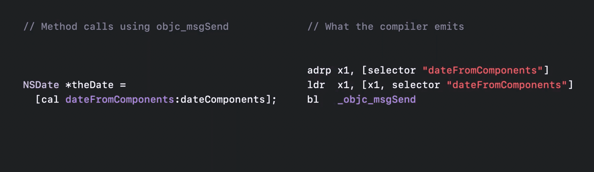
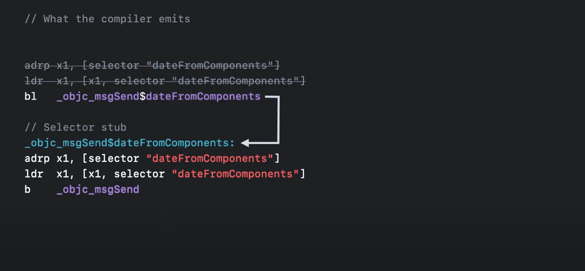
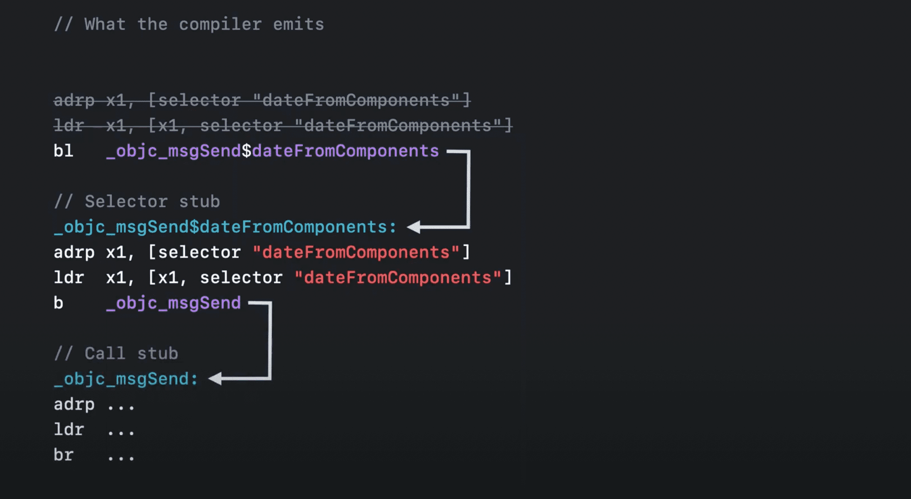
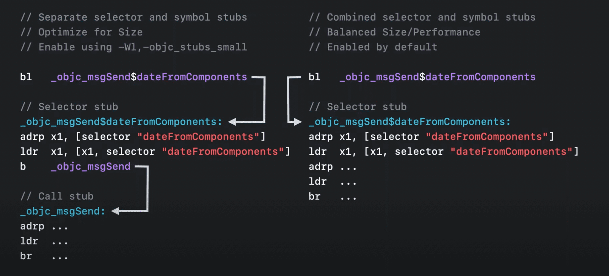
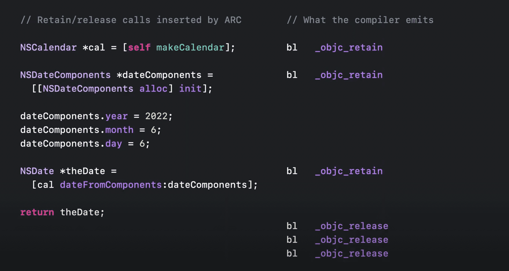
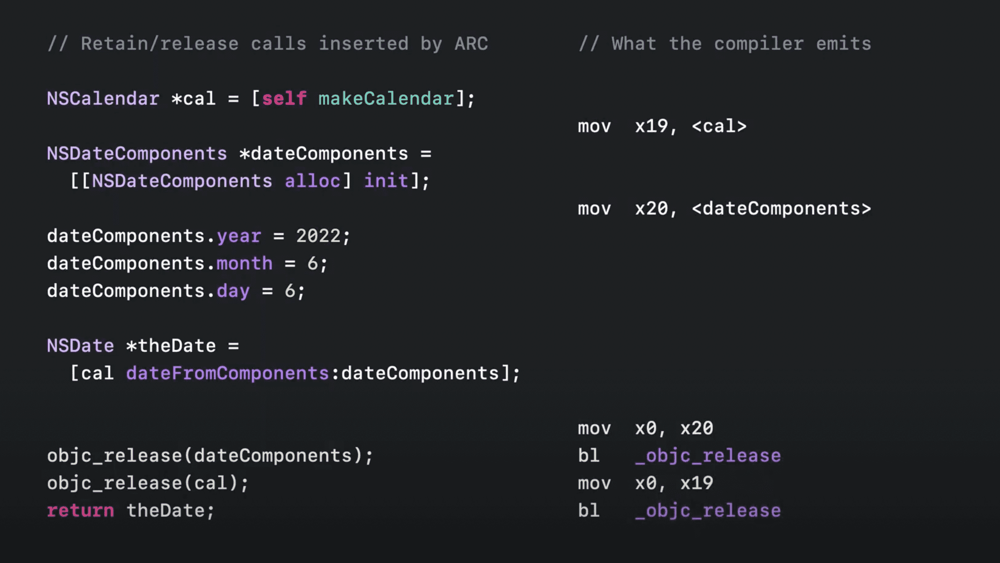
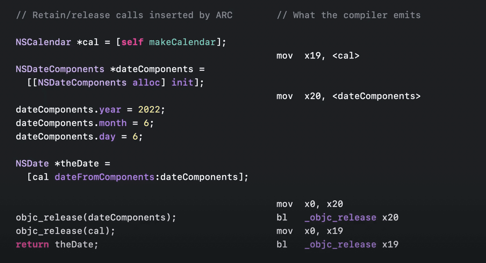
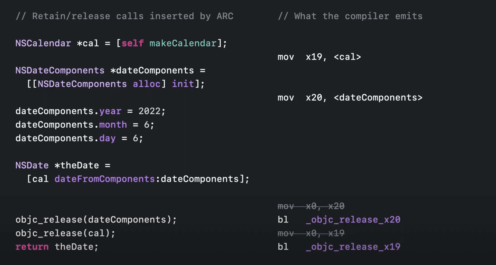

Message Send 优化#
- 在
Objective-C中的方法调用,最终都将转为objc_msgSend调用 - 根据其
objc_msgSend调用约定其中第一个参数为receiver, 第二个参数为selector
- 如上图所示, 每次调用少不了
selector准备, 优化之后

- 如上图所示,创建了
selector对应的stub,将selector参数准备放到了stub中,这样一来stub就可以复用,同时也就少了很多获取selector的adrpldr指令,另一方面也就减小了可执行文件大小 - 同时这种优化有两种优化模式,如下图所示.

Retain and release#
- 在
ARC中由编译器插入对应的内存处理代码,从而避免手动管理内存
- 在调用
objc_retainobjc_release前都需要准备x0寄存器.而优化的方式则是通过将参数准备调整为一系列objc_retain_xxobjc_release_xx调用, 比如datComponents这个变量从分配到释放一直保持在x20寄存器中,那么在释放时则直接通过bl _objc_release_x20,也就少了mov x0, x20这条指令,这种优化同样也减小了可执行文件大小


- 原session Improve app size and runtime performance